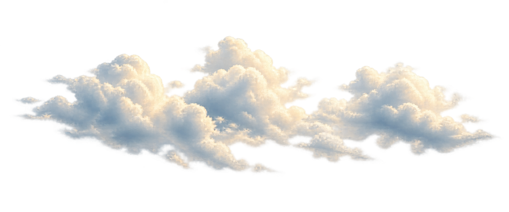
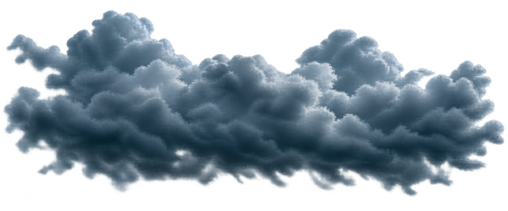
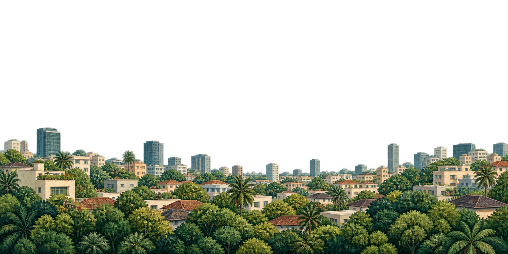

Peta gempa
Laporan terakhir
Contoh- Magnitudo
- —
- Kedalaman
- —
- Waktu
- —
Pembaruan data
Waktu pembaruan akan ditampilkan
Panduan gempa›
Kontak darurat›
Integrasi data gempa: BMKG



Cuaca di lokasimu
29°
Cerah berawan
Contoh cuaca
Waktu pembaruan akan ditampilkan
Integrasi data gempa: BMKG
Pilih “Cek laporan BMKG” untuk memuat peta guncangan dari sumber resminya.
Posisi dan data hanya ilustrasi
Lokasi mengikuti laporan yang dipilih
Dirasakan: mengikuti laporan BMKG
Lihat sumber BMKGBukan kejadian aktual